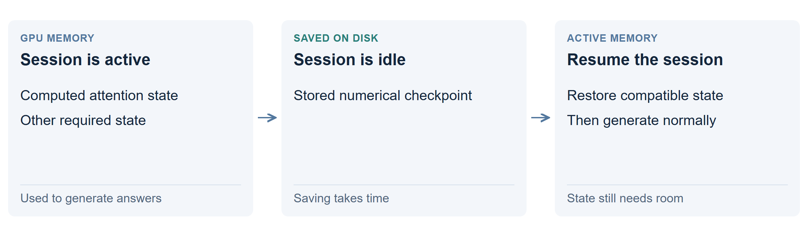

Park an inactive cache on disk
Save an inactive session’s computed state, then restore it when needed. Think of putting work away between visits. The aim is to avoid rereading the entire prompt when the session resumes.

What is saved?
A saved transcript contains words. A saved cache contains numbers the model computed while processing those words, plus the state needed to resume correctly. The two are not interchangeable.
With ordinary transcript storage, the server reads the text again. With cache parking, a compatible server loads the saved computation before continuing.
Does it make writing slower?
Saving and restoring add waiting time. Once the required state is back in active memory, generation need not keep reading disk. It still pays the ordinary cost of the retained context.
What do the results show?
There is no completed save/restore benchmark in this research. For this model, the 200K-token attention cache alone is calculated at about 12.2 GiB across both GPUs. That is much larger than a text file.
When is it useful? What are the limits?
It could let many inactive sessions share a smaller pool of active memory. Whether restoring is faster than rereading depends on storage speed, state size and the engine.
The active session must still fit its execution setup. Parking cannot make a nearly full GPU hold a 200K-token active context with only a few KB left. That requires a different mechanism: active offloading.
Technical details: a correct checkpoint
This hybrid model needs compatible attention state, recurrent state, token positions and runtime metadata; drafting may require additional state or reconstruction. Model weights, numerical format and execution rules must match the restore path.
The attention payload calculation is 16 layers × 2 arrays × 4 KV heads × 256 values × 2 bytes = 64 KiB per token. It excludes weights, recurrent state, drafting, padding and workspace. Copying bytes alone does not establish identical resumed output.